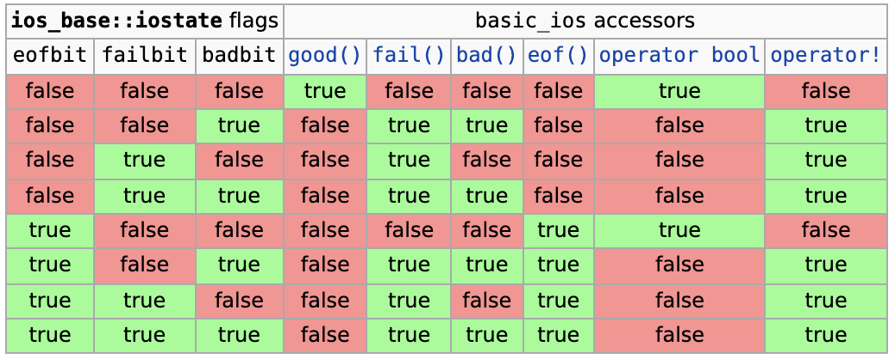

基础知识
- 主要处理两个问题
- 表示形式的变化：使用格式化/解析在数据的内部表示与字符序列间转换
- 与外部设备的通信：针对不同的外部设备（终端、文件、内存）引入不同的处理逻辑
- 所涉及到的操作
- 第1步：格式化 / 解析
- 第2步：缓存
- 累积到一定数量再输出，提高程序性能
- 第3步：编码转换
- 第4步：传输
- 采用模板来封装字符特性，采用继承来封装设备特性
- 常用的类型实际上是类模板实例化的结果
输入与输出
- 分为格式化与非格式化两类
- 非格式化I/O：不涉及数据表示形式的变化
- 常用输入函数：get / read / getline / gcount
- 常用输出函数：put / write
- 用的比较少，大部分情况下我们都是输入或者输出人能看得懂的数据
- 格式化I/O：使用移位操作符来进行的输入(»)与输出(«)
- C++通过操作符重载以支持内建数据类型的格式化I/O
- 可以通过重载操作符以支持自定义类型的格式化I/O
- 格式控制
- 可接受位掩码类型(showpos)、字符类型(fill)与取值相对随意(width)的格式化参数
- 注意width方法的特殊性：触发后被重置
char a = '0'; int x = static_cast<char>(a); std::cout.setf(std::ios_base::showpos); // 显示正负号 std::cout.width(10); // 打印的内容占10个字符 std::cout.fill('.'); // 空白处填上'.' std::cout << a << std::endl; // 打印出“.........0”，字符没有正负，所以这里没有显示正负号 std::cout << x << std::endl; // 打印出“+48”，width被重置了 std::cout.width(10); // 打印的内容占10个字符 std::cout << -x << std::endl; // 打印出“.......-48”
- 操纵符
- 简化格式化参数的设置
- 触发实际的插入与提取操作
char a = '0'; int x = static_cast<char>(a); std::cout << std::showposi << std::setw(10) << std::setfill('.') << a << "\n" << x << std::endl; - 提取会放松对格式的限制
- 比如cin输入+0010，它还是能解析为10。
- 提取C风格字符串时要小心内存越界
char x[5] = {}; std::cin >> x; // 输入“abcdefg”，程序会崩溃，如果x是std::string类型，就没有这个问题 std::cin >> std::setw(5) >> x; // 合法，由于最后一个字符要写'\0'，所以这里会读(5-1)个字符进入x，就不会越界了 std::cout << x << std::endl;
文件与内存操作
- 文件操作
-
basic_ifstream / basic_ofstream / basic_fstream
-
文件流可以处于打开/关闭两种状态，处于打开状态时无法再次打开，只有打开时才能I/O
// 打开和关闭本质就是是否和一个文件产生了关联 // 自动open，常用 std::ifstream inFile("file_name"); std::cout << inFile.is_open() << std::endl; // 如果file_name存在，就打印“1”，否则打印“0” // 手动open，不常用 std::ifstream inFile2; std::cout << inFile.is_open() << std::endl; // "0" inFile2.open("file_name"); std::cout << inFile2.is_open() << std::endl; // 如果file_name存在，就打印“1”，否则打印“0” // 手动关闭 inFile2.close(); std::ofstream outFile("file_name"); outFile << "hello\n"; outFile.close(); // 除了断开和文件的关联之外，还会把缓存区中剩余的内容传输出去 // 当outFile对象被销毁的时候，会隐式调用close方法，确保缓存区的内容被传输出去，否则这部分内容就丢失了，所以上面一行代码也可以不要 -
文件流的打开模式
标记名 作用 in 打开以供读取 out 打开以供写入 ate 表示起始位置位于文件末尾 app 附加文件，即总是向文件尾写入 trunc 截断文件，即删除文件中的内容 binary 二进制模式 - 每种文件流都有缺省的打开方式
// ifstream的缺省打开方式是ios_base::in // ofstream的缺省打开方式是ios_base::out | ios_base::trunc，trunc会导致在向文件写入的时候，文件里已有的内容会被删除; 可以设定为ios_base::out | ios_base::app来实现追加 // fstream的缺省打开方式是ios_base::in | ios_base::out std::ifstream inFile("file_name", std::ios_base::in); // 这里的ios_base::in也可以不加，因为ifstream对象的缺省打开方式就是这个 std::ifstream inFile("file_name", std::ios_base::in | std::ios_base::ate); // 从文件末尾开始读取 - 注意ate和app的异同
// 下面这种写法还是会清空文件里已有的内容 std::ofstream outFile("filename", std::ios_base::out | std::ios_base::ate); // 下面这种写法可以追加内容 std::ofstream outFile("filename", std::ios_base::out | std::ios_base::app); - binary能禁止系统特定的转换
- 避免意义不明确的流使用方式（如ifstream + out）
- 推荐的打开方式
打开方式 效果 加结尾模式标记 加二进制模式标记 in 只读方式打开文本文件 初始文件位置位于文件末尾 禁止系统转换 out|trunc 如果文件存在，长度截断为0；否则创建文件供写入 初始文件位置位于文件末尾 禁止系统转换 out 如果文件存在，长度截断为0；否则创建文件供写入 初始文件位置位于文件末尾 禁止系统转换 out|app 附加：打开或创建文件，仅供文件末尾写入 初始文件位置位于文件末尾 禁止系统转换 in|out 打开文件供更新使用(支持读写) 初始文件位置位于文件末尾 禁止系统转换 in|out|trunc 如果文件存在，长度截断为0；否则创建文件供更新使用 初始文件位置位于文件末尾 禁止系统转换
- 每种文件流都有缺省的打开方式
-
文件读取代码例子
//读取方式: 逐词读取, 词之间用空格区分 void ReadDataFromFileWBW() { ifstream fin("data.txt"); string s; // c++的流析取器 >> 从流对象析取内容到右操作数。 // 它的默认分隔符是：\t, space, enter. while(fin >> s) { cout << "Read from file: " << s << endl; } } //读取方式: 逐行读取, 将行读入字符数组, 行之间用回车换行区分 void ReadDataFromFileLBLIntoCharArray() { ifstream fin("data.txt"); const int LINE_LENGTH = 100; // 一:fstream.getline的第二个参数需要传入字符数，而非字节数，文档中没有明确说明。 // 二:如果单行超过了缓冲，则循环会结束。 // 总结：用getline的时候，一定要保证缓冲区够大，能够容纳各种可能的数据行。切记传入字符数。 // 在此例中则为创建"data.txt"的时候，每一行的字符数不要超过100，否则while循环会结束。 char str[LINE_LENGTH]; while(fin.getline(str, LINE_LENGTH)) { cout << "Read from file: " << str << endl; } } //读取方式: 逐行读取, 将行读入字符串, 行之间用回车换行区分 void ReadDataFromFileLBLIntoString() { ifstream fin("data.txt"); string s; // 这里的getline是C++ string里面的API，和上面的不一样 while(getline(fin,s)) { cout << "Read from file: " << s << endl; } }
-
- 内存操作
- 内存流：basic_istringstream / basic_ostringstream / basic_stringstream
- 也会受打开模式：in / out / app的影响，不会受trunc和binary的影响
std::ostringstream buf("test"); buf << '1'; std::cout << buf.str() << "\n"; // 输出“1est” std::ostringstream buf2("test", std::ios_base::ate); buf2 << '1'; std::cout << buf2.str() << "\n"; // 输出“test1” - 使用str()方法获取底层所对应的字符串
- 小心避免使用str().c_str()的形式获取C风格字符串，因为str()返回的是一个右值，是个临时对象，该行语句执行完就会被销毁，所以拿str()返回值的指针进行操作是一件很危险的事
- 可以分两步写，先把str()存在一个局部变量里，再返回该局部对象的c_str()
- 基于字符串流的字符串拼接优化
// 下面这种写法的性能非常差 // 当x新加入一些字符的时候，它会判断当前x所拥有的内存是否够用，不够用的话，会新开辟一块大内存，把x中已经有的内容和新加入的内存一起放在新的大内存里，再去销毁掉原来占用的小内存 // 这种操作很像vector.emplace_back过程，不断在开辟和释放内存，非常占资源 std::string x; x += "hello"; x += "hello"; x += "hello"; // 改成这样就好很多 // 因为stream会在内部维护一个缓冲区，只有缓冲区填满了才会写入内存。 // 由于缓冲区一般比较大，所以相比上面的写法，下面的写法对内存的操作会变少很多。 std::ostringstream tmp; tmp << "hello"; tmp << "hello"; tmp << "hello"; std::string x = tmp.str();
流的定位
- 获取流位置
- tellg() / tellp()可以用于获取输入(get) / 输出(put)流位置（pos_type类型）
- 两个方法可能会失败，此时返回pos_type(-1)
- 设置流位置
- seekg() / seekp()用于设置输入/输出流的位置
- 这两个方法分别有两个重置版本
- 设置绝对位置：传入pos_type进行设置
- 设置相对位置：通过偏移量（字符格式ios_base::beg）+ 流位置符号的方式设置
- ios_base::beg：流的开头
- ios_base::cur：当前流的位置
- ios_base::end：流的结尾
流的同步
- 基于flush() / sync() / unibuf的通过
- flush()用于输出流同步，刷新缓冲区
// 下面的代码有一个问题，cout的缓冲区要满了才会输出到终端，如果像这里没有满的话，终端上就没有"What's your name?"，用户就不知道该干嘛 std::cout << "What's your name?"; std::string name; std::cin >> name; // 解决方案1 std::cout << "What's your name?" << std::flush; // 解决方案2 std::cout << "What's your name?"; std::cout.flush(); // 解决方案3，不建议用，性能会受较大影响，缓冲区机制就不存在了 std::cout << std::unibuf << "What's your name?"; - sync()用于输入流同步，其实现逻辑是编译器所定义的
- 输出流可以通过设置unibuf来保证每次输出后自动同步
- flush()用于输出流同步，刷新缓冲区
- 基于绑定(tie)的同步
- 绑定的目标一定是个输出流
- 流可以绑定到一个输出流上，这样每次输入 / 输出前可以刷新输出流的缓冲区
- 比如cin绑定到了cout上
- 与C语言标准IO库的同步
- cout维护了一个缓冲区，printf也维护了一个缓冲区，如果不同步，那cout和printf的输出顺序就和他们在代码中的执行顺序不一致了
- 缺省情况下，C++的输入输出操作会与C的输入输出函数同步
- 可以通过sync_with_stdio关闭该同步，因为为了这个同步，系统牺牲了一部分性能
流的状态
- iostate
- failbit: 输入输出操作失败（格式化或者提取错误）
// outFile本身就是close状态（没有关联到任何文件），执行close操作会失败 std::ofstream outFile; std::cout << outFile.fail() << std::endl; // 0 outFile.close(); std::cout << outFile.fail() << std::endl; // 1 - badbit: 不可恢复的错误
std::ofstream outFile; outFile << "hello"; std::cout << outFile.bad() << std::endl; // 1 - eofbit: 关联的输入序列已抵达文件尾
- goodbit: 无错误
- failbit: 输入输出操作失败（格式化或者提取错误）
- 检测流的状态
- good() / fail() / bad() / eof()方法
- 流会隐式转换为bool值
int x; if (std::cin >> x) { std::cout << "succ" << std::endl; } std::cout << static_cast<bool>(std::cin) << std::endl; 
- 注意
- 转换为bool值时不会考虑eof
- fail与eofkennel会被同时设置，但两者含义不同
- 通常来说，只要流处于某种错误状态时，后续的插入/提取操作就不会生效
- 设置流状态
- clear(iostate): 设置流的状态为一个具体的数值（缺省为goodbit）
- setstate: 将某个状态附加到现有的流状态上
- 捕获流异常: exceptions方法